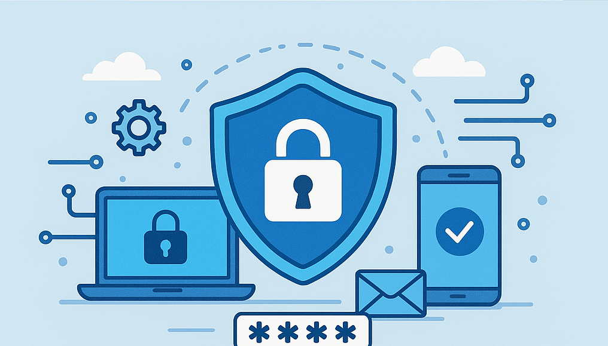

La cybersécurité : c'est quoi ?
La cybersécurité, c’est tout ce qu’on met en place pour protéger :
- les appareils (ordinateurs, téléphones, tablettes)
- les données (photos, devoirs, mots de passe, documents)
- les comptes (e-mails, réseaux sociaux, jeux en ligne)
- et les réseaux (Wi-Fi, Internet de l’entreprise)
Le but est d’éviter les attaques, les arnaques et les pertes de données.
Les principaux risques sur Internet
1. Les virus et logiciels malveillants
Un virus est un programme qui peut abîmer ton ordinateur, supprimer des fichiers ou espionner ce que tu fais. Il arrive souvent en :
- téléchargeant des fichiers suspects (films, jeux piratés…)
- cliquant sur des pièces jointes inconnues
- installant des logiciels trouvés sur des sites douteux
2. Le piratage de comptes
Le piratage, c’est quand quelqu’un arrive à entrer dans ton compte sans ton autorisation, par exemple sur ton mail, ton jeu préféré ou ton réseau social.
Les causes fréquentes :
- mot de passe trop simple : 123456, azerty, password…
- même mot de passe utilisé partout
- mot de passe donné à un ami (qui le redonne à un autre)
3. Les arnaques en ligne (phishing)
Le phishing, c’est une arnaque où quelqu’un essaie de se faire passer pour une banque, un service de livraison ou un site officiel pour te voler :
- ton mot de passe
- ton numéro de carte bancaire
- ou d’autres informations personnelles
Souvent, tu reçois un mail ou un message avec :
- une phrase qui fait peur : “Votre compte va être bloqué”
- un lien sur lequel ils te demandent de cliquer
- une demande de mot de passe ou de code
4. La perte ou la destruction de fichiers
On peut aussi perdre des données à cause :
- d’une panne (ordinateur qui ne démarre plus)
- d’un vol (ordinateur ou téléphone volé)
- d’une mauvaise manipulation (fichiers supprimés)
C’est pour cela qu’il faut faire des sauvegardes.
Les bons réflexes à avoir
- Utiliser des mots de passe longs et difficiles à deviner
- Ne jamais donner son mot de passe (même à un ami)
- Ne pas cliquer sur des liens suspects dans les mails ou SMS
- Mettre à jour son téléphone et son ordinateur
- Installer un antivirus et le laisser à jour
- Faire des sauvegardes régulières de ses fichiers importants
Exercices
Exercice 1 : Vrai ou Faux ?
Indique si chaque phrase est Vraie ou Fausse.
- Utiliser le même mot de passe pour tous ses comptes est une bonne idée.
- Un mail qui demande ton mot de passe peut être une arnaque.
- Un mot de passe comme 123456 est très sécurisé.
- Faire une sauvegarde permet de récupérer ses fichiers en cas de problème.
- Cliquez sur tous les liens que vous recevez, au cas où ce serait important.